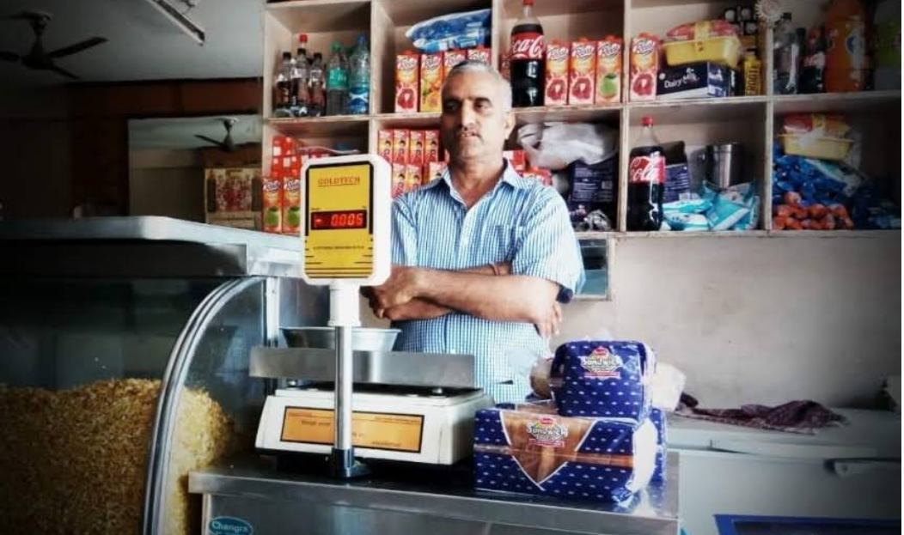
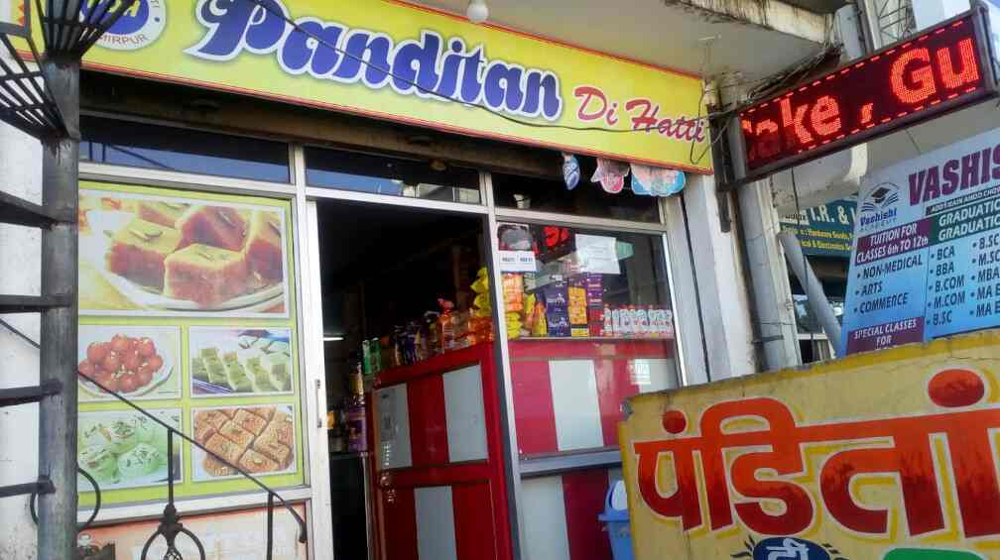

Since 1980, Panditan Di Hatti has been a beloved name in Hamirpur (Anu), Himachal Pradesh. Founded with love and tradition, our shop has served generations with authentic sweets and snacks. With over 1,250+ reviews averaging 4.5★, we continue to be a trusted destination for locals and visitors a like.
Panditaan Di Hatti is a popular sweet shop located in Hamirpur, Himachal Pradesh, known for its traditional Himachali sweets, particularly the besan ki barfi. The shop is situated near the Govt Degree College and is well-regarded for its fresh and flavorful treats. Visitors often praise the excellent service and the quality of the sweets, making it a must-visit for those looking to indulge in authentic sweets.
